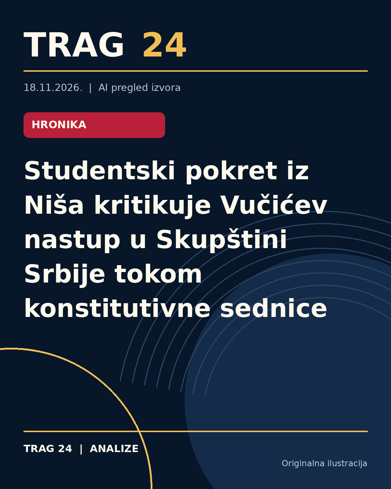

Studentski pokret iz Niša kritikuje Vučićev nastup u Skupštini Srbije tokom konstitutivne sednice

ŠTA SE DOGODILO
Tokom konstitutivne sednice Narodne skupštine Srbije, koja traje već dva dana, došlo je do oštrih polemika i međusobnih optužbi između poslanika Studentske liste i predstavnika Srpske napredne stranke (SNS), koju predvodi Aleksandar Vučić. Studenti iz Niša su se javno oglasili povodom Vučićevih obraćanja u parlamentu, ocenjujući ih kao radikalski cirkus i poručili da njihovi predstavnici neće učestvovati u takvim raspravama.
HRONOLOGIJA
Konstitutivna sednica 15. saziva Narodne skupštine Srbije počela je 17. novembra, nakon parlamentarnih izbora na kojima je Studentska lista osvojila 140, a lista oko SNS 103 mandata. Za predsednika Skupštine kandidovani su Aleksandar Čupić (Studentska lista) i Stojan Radenović (opozicija, predsedava kao najstariji poslanik). Tokom prethodna dva dana, Vučić je imao višesatna obraćanja, dok su poslanici Studentske liste odustali od daljeg učešća u raspravama. Sednica je završena sa najavom nastavka u četvrtak u 10 časova.
ŠTA NAVODE IZVORI
Iz Studentskog pokreta iz Niša navode da se izvinjavaju građanima zbog okolnosti u parlamentu i mole za strpljenje dok ne bude izabran Čupić za predsednika Skupštine. Ističu da njihovi poslanici neće učestvovati u "cirkusu radikalskog kova" i da će ignorisati Vučića, koji je, kako kažu, nakon medijske odsutnosti nastavio sa "izlivima radikalskog otrova". Naglašavaju da je Vučić teško podneo gubitak funkcija i medijske pažnje, te pravdaju njihovo neodgovaranje ignorisanjem prozivki. Takođe se pominje da su tokom sednice izneta lična optuživanja i kršenja Poslovnika.
ŠTA JE POTVRĐENO
Potvrđeno je da konstitutivna sednica traje dva dana, a da još nije izabran predsednik Skupštine. Aleksandar Vučić imao je višesatna obraćanja u parlamentu, dok su poslanici Studentske liste odustali od daljeg javnog nastupa. Kandidat Studentske liste za predsednika Skupštine je Aleksandar Čupić, a predsedavajući do izbora je Stojan Radenović. Studenti su javno istakli svoj stav o Vučićevim nastupima i najavili ignorisanje njegovih prozivki.
ŠTA NIJE POTVRĐENO
Nema potvrda o konkretnim krivičnim ili drugim pravnim posledicama u vezi sa navodima iz govora ili optužbama pomenutim tokom sednice. Takođe nije potvrđeno kako će se konkretno promeniti praksa vođenja sednica ako Čupić bude izabran za predsednika Skupštine, niti detalji o daljim koracima poslanika Studentske liste u parlamentarnim aktivnostima.
ŠTA OSTАJE OTVORENO: Ostaje nepoznato kako će se dalje razvijati situacija u Skupštini nakon nastavka sednice i izbora predsednika parlamenta. Takođe je nejasno na koji način će se odraziti najavljene promene u vođenju sednica i kako će se političke tenzije između Studentske liste i SNS dalje odraziti na politički dijalog i rad Skupštine Srbije.
Izvori
- https://nova.rs/vesti/politika/studenti-u-blokadi-iz-nisa-porucili-vucicu-da-nece-ucestvovati-u-cirkusu-u-skupstini-neka-mu-ovo-bude-priprema-za-izlaganja-sa-optuzenicke-klupe/
- https://n1info.rs/vesti/neka-mu-ovo-bude-finalna-priprema-za-izlaganja-sa-optuzenicke-klupe-studenti-iz-nisa-o-vucicevom-nastupu-u-skupstini/
- https://www.juznevesti.com/politika/studentski-pokret-u-nisu-neka-mu-ovo-bude-finalna-priprema-za-izlaganja-sa-optuzenicke-klupe/
Ova analiza je pripremljena uz pomoć veštačke inteligencije na osnovu javno dostupnih izvora. Navodi izvora nisu nužno nezavisno potvrđeni.